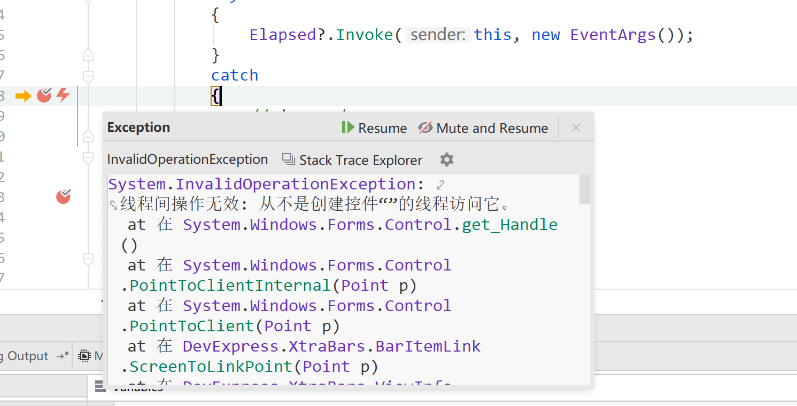

在一个 Timer 时钟的周期方法内，有一个 foreach 循环，当执行到某些特定的语句时，会从头开始执行，而不会执行后续的语句。
该问题我在初步分析之后，发现可能是由于程序出现了异常，但是被吞噬掉造成的。在我某一个 item 元素当中，其值为 null 应该会抛出空异常。但是没有异常抛出，后续我不知道哪个地方吞噬了异常，就在循环体内增加了一个 if 语句过滤掉了 null 元素。
不过之后仍然会出现最开始所说的问题，看来还有其他的地方在抛出异常，最后排查到是执行 DevExpress 图表控件的 BeginDataUpdate() 和 EndDataUpdate() 之后就会出现上述症状。
查阅了我的 Timer 是参照 ABP 实现的一个 Timer，找到调用回调方法的地方，发现是我自己将异常捕获并将其忽略掉了。
private void TimerCallBack(object state)
{
lock (_taskTimer)
{
if (!_running || _performingTasks)
{
return;
}
_taskTimer.Change(Timeout.Infinite, Timeout.Infinite);
_performingTasks = true;
}
try
{
Elapsed?.Invoke(this, new EventArgs());
}
catch
{
// ignored
}
finally
{
lock (_taskTimer)
{
_performingTasks = false;
if (_running)
{
_taskTimer.Change(Period, Timeout.Infinite);
}
Monitor.Pulse(_taskTimer);
}
}
}
根据上图来看，确实是我回调方法中的代码抛出了异常，导致后台任务重新执行。
将跨线程访问语句修复之后，程序运行正常，后面我也在 catch 语句块里面增加了异常日志写入，成功解决问题。